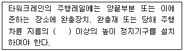
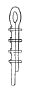
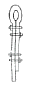
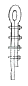
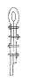

타워크레인운전기능사 (2010-03-28 기출문제)
1과목: 타워크레인 구조 및 기능일반
1. 타워크레인 비가동시 지브가 바람에 따라 자유롭게 움직여 풍압에 의한 타워크레인 본체를 보호하고자 설치된 장치는?
- 선회 브레이크 풀림 장치
- 충돌 방지 장치
- 선회 제한 리미트 스위치
- 와이어 로프 꼬임 방지 장치
(정답률: 93%)

2. 메인 지브를 이동하며 권상작업을 위한 작업반경을 결정하는 장치는?
- 트롤리
- 운전실
- 방호장치
- 과부하 방지장치
(정답률: 97%)
3. 수평기복(Level Luffing)이라 함은 무엇을 말하는가?
- 하물의 높이가 자동적으로 일정하게 유지되도록 지브가 기복하는 것을 말한다.
- 지브가 수평으로 유지되도록 하는 것을 말한다.
- 지면에 놓은 하물을 수평으로 끌어당기는 것을 말한다.
- 훅에 매달린 하물을 균형 상태를 유지하면서 선회하는 것을 말한다.
(정답률: 67%)
4. 어떤 물질의 비중량 또는 밀도를 물의 비중량 또는 밀도로 나누는 값을 무엇이라고 하는가?
- 비체적
- 비중
- 비질량
- 차원
(정답률: 93%)
5. 타워크레인 기초앵커 설치방법에 대한 설명으로 틀린 것은?
- 모든 기종에서 기초 지내력은 15ton/m2 이면 적합하다.
- 기종별 기초규격은 매뉴열 표준에 따라 시공한다.
- 앵커(Fixing Anchor) 시공시 기울기가 발생하지 않게 시공한다.
- 콘크리트 타설시 앵커(Anchor)가 흔들리지 않게 타설한다.
(정답률: 92%)
6. 타워크레인 접지에 관한 설명 중 잘못된 것은?
- 접기극의 크기는 동판의 경우 면적이 500cm2 이상이어야 한다.
- 접지선은 베이직 마스트 하단에 접속한다.
- 접지선은 GV 38mm2 이상을 접속한다.
- 접지극은 기초공사 시 매립한다.
(정답률: 64%)
7. 전압의 종류에는 저압, 고압, 특별고압의 3가지로 분류한다. 특별고압은 교류, 직류 모두 몇 볼트(Volt) 이상인가?
- 145,000
- 15,400
- 7,000
- 3,000
(정답률: 83%)
8. ( )안에 알맞은 것은?

- 2분의 1
- 3분의 1
- 4분의 1
- 5분의 1
(정답률: 66%)
9. 타워크레인의 항목 중 구조부와 거리가 먼 것은?
- 캣트(타워)헤드
- 권상윈치
- 지브
- 마스트(타워섹숀)
(정답률: 78%)
10. 타워크레인 방호장치의 종류에 해당하지 않은 것은?
- 권과 방지장치
- 과부하 방지장치
- 훅크해지장치
- 조향장치
(정답률: 83%)
11. 시브 외경과 이탈방지용 플레이트 간격으로 가장 적합한 것은?
- 3 mm
- 6 mm
- 9 mm
- 12 mm
(정답률: 61%)
12. 타워크레인 유압장치에 관한 일반사항으로 틀린 것은?
- 클라이밍 종료 후에는 램을 수축하여 둔다.
- 오일 량의 상태점검은 클라이밍 시작 전보다 종료 후 하는 것이 더 좋다.
- 유아뱅크 열화 방지를 위한 보호조치를 한다.
- 유압장치는 유압탱크, 실린더, 펌프, 램 등으로 되어 있다.
(정답률: 92%)
13. 배선용 차단기는 퓨즈에 비하여 장점이 많은데, 그 장점이 아닌 것은?
- 개폐기구를 겸하고, 개폐속도가 일정하며 빠르다.
- 과전류가 1극에만 흘러도 각 극이 동시에 트립됨으로 결상 등과 같은 이상이 생기지 않는다.
- 전자제어식 퓨즈이므로 복구 시에는 교환시간이 많이 소요된다.
- 과전류로 동작하였을 때 그 원인을 제거하면 즉시 사용할 수 있다.
(정답률: 89%)
14. 타워크레인 구조부분 계산에 사용하는 하중의 종류가 아닌 것은?
- 굽힘하중
- 좌굴하중
- 풍하중
- 파단하중
(정답률: 52%)
15. KS에 의한 전기외함 구조분류 설명 중 틀린 것은?
- 방적형 : 옥외에서 바람의 영향이 거의 없는 장소
- 방우형 : 옥외에서 비바람을 맞는 장소
- 방말형 : 타워크레인 위의 조명등, 항공장애등(燈)
- 내수형 : 수중 전용의 장소
(정답률: 70%)
16. 유압펌프의 흡입구에서 캐비테이션(공동현상) 방지법이 아닌 것은?
- 오이랭크의 오일점도를 적당히 유지한다.
- 흡입구의 양정을 낮게 한다.
- 흡입관의 굵기는 유압펌프 본체 연결구의 크기와 같은 것을 사용한다.
- 펌프의 운전속도를 규정 속도 이상으로 한다.
(정답률: 89%)
17. 작동에 의한 밸브의 종류가 아닌 것은?
- 시트밸브
- 수동조작밸브
- 전자조작밸브
- 유·공압조작밸브
(정답률: 84%)
18. 과전류 차단기에 대한 설명 중 틀린 것은?
- 제어반에 설치되는 기기이다.
- 누전이 발생시 회로를 차단한다.
- 차단기 용량은 정격전류에 대하여 250% 이상으로 한다.
- 구조는 배선용 차단기와 같다.
(정답률: 58%)
19. 타워크레인 과부하방지장치의 구비 및 설치조건으로 틀린 것은?
- 과부하방지장치는 대단히 중요하므로 아무나 볼 수 없도록 전기판넬 내부에 설치한다.
- 과부하방지장치의 동작은 정격하중의 1.⑤배 이내에서 동작하도록 조정한다.
- 동작시 경보가 울려 운전자 및 인근작업자에게 경고를 주고 임의로 조정하 수 없도록 봉인한다.
- 과부하방지장치는 성능검정 대상품이므로 성능검정 합격품을 설치한다.
(정답률: 88%)
20. 올바른 권상 작업 형태는?
- 지면에서 끌어당김 작업
- 박힌 하중 인양 작업
- 사람머리 위를 통과한 상태 작업
- 신호수가 있을 경우 보이지 않는 곳의 물체이동작업
(정답률: 72%)
2과목: 양중작업 일반
21. 이동형 타워크레인 선정시 종류 및 크기에 따라 적정사양을 선정할 때 갖출 조건 중 관련없는 것은?
- 최대 권상높이
- 기초앵커설치 부지조건
- 가장 무거운 부재의 중량
- 이동식 크레인 선회반경
(정답률: 77%)
22. 신호수의 무전기 사용시 주의점이 아닌 것은?
- 반복신호를 금지한다.
- 신호수의 입장에서 신호한다.
- 무전기 상태를 확인 후 교신한다.
- 은어, 속어, 비어를 사용하지 않는다.
(정답률: 82%)
23. 타워크레인의 주행 레일 측면의 마모는 원 규격치수의 얼마정도인가?
- 5% 이내
- 10% 이내
- 15% 이내
- 20% 이내
(정답률: 76%)
24. 운전자가 손바닥을 안으로 하여 얼굴 앞에서 2~3회 흔드는 신호는?
- 작업 완료
- 신호불명
- 줄걸이 작업미비
- 기중기 이상발생
(정답률: 88%)
25. 타워크레인 운전 및 정비수칙 중 바르지 못한 것은?
- 국가가 인정하는 자격 소지자에 의해서 운전되어야 한다.
- 운전자의 시선은 언제나 지브 또는 붐 선단을 직시하여야 한다.
- 하중이 지면에 있는 상태로 선회를 하지 말아야 한다.
- 크레인 정비지침을 지켜야 하며 전체시스템에 대한 주기적인 검사를 하여야 한다.
(정답률: 86%)
26. 타워크레인의 트롤리 이동 중 기계장치에서 이상음이 날 경우 적절한 조치법은?
- 트롤리 이동을 멈추고 열을 식힌 후 계속 작업한다.
- 속도가 너무 빠르지 않나 확인한다.
- 즉시 작동을 멈추고 점검한다.
- 작업종료 후 조치한다.
(정답률: 93%)
27. 다음 중 양중작업에 필요한 보조용구가 아닌 것은?
- 턴버클
- 섬유 벨트
- 수직 클램프
- 샤클
(정답률: 72%)
28. 타워크레인으로 목재품의 자재를 운반코자 할 때에 줄걸이 작업이 완료되었다면 운전자가 가장 안전하게 권상작업을 한 것은?
- 훅을 하물의 중심위치에 맞추었으면 권상을 계속하여 5m 높이에서 일단 정지한다.
- 권상작동은 하물이 흔들리지 않으므로 항상 최고속도로 운전한다.
- 줄걸이 와이어로프가 장력을 받아 팽팽해지면 일단 정지한 후 운전한다.
- 훅을 하물의 중심위치에 정확히 맞추고 권상과 선회를 동시에 작동한다.
(정답률: 84%)
29. 신호수에 대한 설명이다. 틀린 것은?
- 특별히 구분될 수 있는 복장 및 식별장치를 갖춰야 한다.
- 소정의 신호수 교육을 받아 신호내용을 숙지해야 한다.
- 현장의 각 공정별로 한 사람씩 차출하여 신호수로 시킨다.
- 신호수는 항상 크레인의 동작을 볼 수 있어야 한다.
(정답률: 89%)
30. 선회기어와 베어링 및 축내 급유를 하는 주된 목적이 아닌 것은?
- 캐비테이션(공동화)현상을 방지해준다.
- 부분 마멸을 방지해 준다.
- 동력 손실을 방지해 준다.
- 냉각 작용을 한다.
(정답률: 60%)
31. 로프 한 개로 두줄 걸이로 하여 1000kg의 짐을 90°로 걸어 올렸을 때 한줄에 걸리는 무게(kg)는?
- 250
- 500
- 707
- 6930
(정답률: 68%)
32. 줄걸이 와이어로프에 짐을 매달았을 때 한줄에 걸리는 장력을 구하는 계산 공식으로 적합한 것은?
- (짐의 무게/와이어의 수) ÷ (sin 와이어의 각도)
- (짐의 무게/와이어의 수) × (sin 와이어의 각도)
- (짐의 무게/와이어의 수) ÷ (cos 와이어의 각도)
- (짐의 무게/와이어의 수) ÷ (tan 와이어의 각도)
(정답률: 50%)
33. 줄걸이 체인의 사용 한도에 대한 설명 중 틀린 것은?
- 안전계수가 5 이상이 것
- 지름의 감소가 공칭 직경의 10%를 넘지 않은 것
- 변형 및 균열이 없는 것
- 연신이 제조당시 길이의 10%를 넘지 않은 것
(정답률: 45%)
34. 와이어로프에서 소선을 꼬아 합친 것은?
- 심강
- 트래드
- 공심
- 스트랜드
(정답률: 86%)
35. 무게가 1000kgf 인 물건을 로프 1개로 들어 올린다고 가정할 때 안전계수는? (단, 로프의 파단 하중은 2000kgf 이다.)
- 0.5
- 2.0
- 1.0
- 4.0
(정답률: 72%)
36. 산업안전보건법 안전기준의 와이어로프에 대한 마모 및 교체기준이다. 틀린 것은?
- 한가닥에서 소선의 수가 10% 이상 절단된 것
- 소선 및 스트랜드의 돌출이 확인되는 것
- 외부마모에 의한 호칭지름 감소가 7% 이상일 때
- 킹크나 부식은 없어도 단말고정을 한 것
(정답률: 78%)
37. 클립(clip) 고정이 가장 적합하게 된 것은?




(정답률: 67%)
38. 운전자가 경보기를 울리거나 한쪽 손의 주먹을 다른 손의 손바닥으로 2~3회 두드릴 경우의 수신호 내용은?
- 신호불명
- 이상발생
- 기다려라
- 물건걸기
(정답률: 78%)
39. 줄걸이용 와이어로프에 장력이 걸리면 일단 정지하고 줄걸이 상태를 점검, 확인할 때 해당사항이 아닌 것은?
- 줄걸이용 와이어로프에 걸리는 장력이 균등하게 작용하는가
- 줄거링용 와이어로프에 안전율은 5 이상 되는가
- 하물이 붕괴 또는 추락할 우려는 없는가
- 줄걸이용 와이어로프가 이탈 또는 보호대가 벗겨질 우려는 없는가
(정답률: 82%)
40. 와이어로프의 주유에 대한 것 중 가장 적당한 것은?
- 그리스를 와이어로프의 전체길이에 충분히 칠한다.
- 그리스를 와이어로프에 칠할 필요가 없다.
- 기계유를 로프의 심까지 충분히 적신다.
- 그리스를 로프의 마모가 우려되는 부분만 칠하는 것이 좋다.
(정답률: 76%)
3과목: 타워크레인 설치.해체 일반
41. 다음 중 타워크레인 설치·해체 시 비래·낙하의 재해방지를 위한 방법으로 잘못된 것은?
- 위험 작업범위 내 인원 및 차량 출입금지
- 사용 중인 공구는 사용 후 지상에 보관
- 볼트 및 너트 등 작은 물건은 준비된 주머니를 이용
- 작업전 낙하·비래 방지 조치에 관한 사항을 숙지
(정답률: 87%)
42. 타워크레인의 지지·고정방식 중에서 건물과의 이격거리가 크지 않으며 연결지점 수를 줄이기 위해 사용하는 방식은?
- A-프레임과 지지대 1개 방식
- A-프레임과 로프 2개 방식
- 지지대 3개 방식
- 지지대 2개와 로프 2개 방식
(정답률: 56%)
43. 타워크레인의 마스트를 해체하고자 할 때 실시하는 작업이 아닌 것은?
- 마스트와 턴테이블 하단의 연결 보트 또는 핀을 푼다.
- 해체할 마스트와 하단 마스트의 연결보트 또는 핀을 푼다.
- 마스트에 가이드레일의 롤러를 끼워 넣는다.
- 마스트를 가이드레일의 안쪽으로 밀어 넣는다.
(정답률: 66%)
44. 타워크레인의 설치작업 중 텔레스코핑 케이지를 올리고 있을 때 할 수 있는 작업은?
- 지브를 회전시키는 것
- 지비의 트롤리를 움직이는 것
- 훅크를 권상, 권하시키는 것
- 유압펌프의 동작을 계속 유지하는 것
(정답률: 85%)
45. 타워크레인 해체작업 시 다음 중 운전자가 숙지해야 할 사항이 아닌 것은?
- 해체작업 순서
- 해체 되는 장비의 구조 및 기능
- 해체를 돕는 크레인의 구조와 기능
- 해체작업 안전지침
(정답률: 84%)
46. 다음 타워크레인 검사 중 근로자 대표의 요구가 있는 경우에 근로자 대표를 입회하여야 하는 검사는?
- 완성검사
- 설계검사
- 성능검사
- 자체검사
(정답률: 65%)
47. 텔레스코픽 요크의 핀 또는 홀(HOLE)의 변형을 목격하였다. 조치사항으로 틀린 것은?
- 핀이 다소 휘였으면 분해 및 교정 후 재사용한다.
- 홀(HOLE)이 변형된 마스트는 해체, 재사용하지 않는다.
- 휘거나 변형된 핀은 파기하여 재사용하지 않는다.
- 핀은 반드시 제작사에게 공급된 것으로 사용한다.
(정답률: 88%)
48. 유해·위험작업의 취업제한에 관한 규첵이 의하여, 타워크레인 조종업무의 적용대상에서 제외되는 타워크레인은?
- 조종석이 설치된 정격하중이 1톤인 타워크레인
- 조종석이 설치된 정격하중이 2톤인 타워크레인
- 조종석이 설치된 정격하중이 3톤인 타워크레인
- 조종석이 설치되지 아니한 정격하중 3톤인 타워크레인
(정답률: 92%)
49. 클라이밍 시 안전핀 사용 중 틀린 것은?
- 케이지와 연결된 안전핀은 클라이밍 시만 사용
- 클라이밍 작업 후는 정상 핀으로 교체
- 정상 핀으로 교체 전에는 작업 금지
- 안전핀은 2개소만 핀으로 고정
(정답률: 80%)
50. 마스트 연장작업 준비사항으로 맞지 않는 것은?
- 유압장치와 카운터 지브의 위치는 동일 방향으로 맞춘다.
- 유압실린더는 연장작업 전 절대 작동을 금한다.
- 추가 할 마스트는 메인 지브 방향으로 운반한다.
- 유압장치의 오일량, 모터 회전방향을 확인한다.
(정답률: 63%)
51. 연료 파이프의 피팅을 풀 때 가장 알맞은 렌치는?
- 소켓 렌치
- 복스 렌치
- 오픈 엔드 렌치
- 탭 렌치
(정답률: 64%)
52. 연소의 3요소에 해당되지 않는 것은?
- 물
- 공기
- 점화원
- 가연물
(정답률: 80%)
53. 원목처럼 길이가 긴 화물을 외줄 달기 슬링 용구를 사용하여 크레인으로 물건을 안전하게 달아 올릴 때의 방법으로 가장 거리가 먼 것은?
- 슬링을 거는 위치를 한쪽으로 약간 치우치게 묶고 화물의 중량이 많이 걸리는 방향을 아래쪽으로 향하게 들어 올린다.
- 제한용량 이상을 달지 않는다.
- 수평으로 달아 올린다.
- 신호에 따라 움직인다.
(정답률: 62%)
54. 드릴(drill)기기를 사용하여 작업할 때 착용을 금지하는 것은?
- 안전화
- 장갑
- 작업모
- 작업복
(정답률: 89%)
55. 건설기계 장비의 운전 중에도 안전을 위하여 점검하여야 하는 것은?
- 계기판 점검
- 냉각수 량 점검
- 타이어 압력 측정 및 점검
- 팬 벨트 장력 점검
(정답률: 75%)
56. 유류 화재 시 소화방법으로 가장 부적절한 것은?
- B급 화재 소화기를 사용한다.
- 다량의 물을 부어 끈다.
- 모래를 뿌린다.
- ABC 소화기를 사용한다.
(정답률: 93%)
57. 산소 아세틸렌 가스용접에서 토치의 점화시 작업의 우선 순위 설명으로 올바른 것은?
- 토치의 아세틸렌 밸브를 먼저 연다.
- 토치의 산소 밸브르 먼저 연다.
- 산소 밸브와 아세틸렌 밸브를 동시에 연다.
- 혼합가스밸브를 먼저 연 다음 아세틸렌 밸브를 연다.
(정답률: 66%)
58. 벨트를 풀리에 걸 때는 어떤 상태에서 걸어야 하는가?
- 회전을 중지시킨 후 건다.
- 저속으로 회전시키면서 건다.
- 중속으로 회전시키면서 건다.
- 고속으로 회전시키면서 건다.
(정답률: 94%)
59. 안전한 작업을 하기 위하여 작업 보강을 선정할 때의 유의사항으로 가장 거리가 먼 것은?
- 화기사용 장소에서는 방염성, 불연성의 것을 사용하도록 한다.
- 착요아의 취미, 기호 등에 중점을 두고 선정한다.
- 작업복은 몸에 맞고 동작이 편하도록 제작한다.
- 상의의 소매나 바지 가락 끝 부분이 안전하고 작업하기 편리하게 잘 처리된 것을 선정한다.
(정답률: 85%)
60. 소화하기 힘든 정도로 화재가 진행된 현장에서 제일 먼저 취하여야 할 조치사항으로 가장 올바른 것은?
- 소화기 사용
- 화재 신고
- 인명 구조
- 경찰서에 신고
(정답률: 75%)